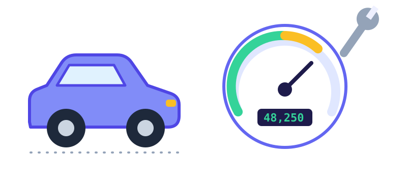

Cara Mengecek Kode QRIS Sebelum Membayar

QRIS membuat membayar jadi cepat: satu kode bisa dibaca banyak aplikasi bank dan dompet digital. Kemudahan yang sama juga dimanfaatkan penipu. Kabar baiknya, sebagian besar modus bisa dihindari dengan beberapa kebiasaan kecil yang hanya butuh beberapa detik.
Modus yang paling sering terjadi
- Stiker QR palsu. Kode asli di meja kasir atau di toko ditutup dengan stiker QR milik orang lain, sehingga uangmu masuk ke rekening yang salah.
- QR atau link dari pesan tak dikenal. Kamu menerima gambar QR atau link pembayaran lewat chat dengan alasan hadiah, tagihan, atau "pembayaran ke penjual".
- QR dinamis yang dipalsukan. Seseorang mengirim kode dengan nominal sudah terisi, lalu mendesakmu membayar cepat-cepat.
Lima langkah memeriksa sebelum membayar
- Lihat nama merchant di layar konfirmasi. Setelah memindai, aplikasi pembayaran menampilkan nama penerima. Cocokkan dengan nama toko tempat kamu berada. Kalau berbeda jauh, jangan lanjutkan dan tanyakan ke kasir.
- Periksa fisik kodenya. Raba tepi stiker. Kode yang ditempel di atas kode lain biasanya terasa menonjol atau bergelombang. Waspadai kode yang terlihat baru ditempel di tempat yang biasanya bersih.
- Periksa nominal. Pada QR statis, kamu mengetik nominal sendiri, jadi cek ulang angkanya sebelum konfirmasi. Pada QR dinamis, pastikan nominal sama dengan tagihan.
- Jangan bayar lewat QR atau link dari orang yang tidak kamu kenal. Pembayaran yang sah jarang dimulai dari pesan tiba-tiba. Jangan terburu-buru karena didesak.
- Simpan bukti dan cek notifikasi. Minta penjual memastikan pembayaran masuk. Notifikasi "pembayaran diterima" di sisi penjual adalah konfirmasi yang paling jelas.
Kalau terlanjur salah bayar
Segera hubungi layanan pelanggan aplikasi atau bank yang kamu pakai. Siapkan bukti transaksi, waktu, nominal, dan nama penerima yang tertera. Semakin cepat dilaporkan, semakin besar peluang dibantu. Kalau kamu menduga ada stiker palsu di sebuah toko, kabari pemilik tokonya supaya kodenya bisa segera diganti.
Untuk pemilik usaha
- Tempel kode QRIS di tempat yang diawasi, dan periksa secara berkala bahwa tidak ada stiker lain di atasnya.
- Gunakan papan atau standing QR yang tidak mudah ditempeli.
- Cek notifikasi pembayaran sebelum menyerahkan barang.
- Beri tahu pelanggan nama merchant yang seharusnya muncul di layar mereka.
Perlu diingat, tidak ada pemeriksaan yang menjamin seratus persen aman. Cara-cara di atas mengurangi risiko, tetapi kewaspadaanmu tetap yang utama.
Panduan lainnya

How Often Should You Service Your Car or Motorbike?
Typical service intervals for engine oil, filters, brakes and tyres, why time matters as much as distance, and how to keep a simple service log.

Best Before vs Use By: How to Read Food Dates
What food date labels really mean, how long leftovers last, the right fridge and freezer temperatures, and simple habits that cut food waste.

How Often Should You Water Houseplants?
Why a fixed watering schedule fails, how to check whether a plant is thirsty, and the signs of too much or too little water.